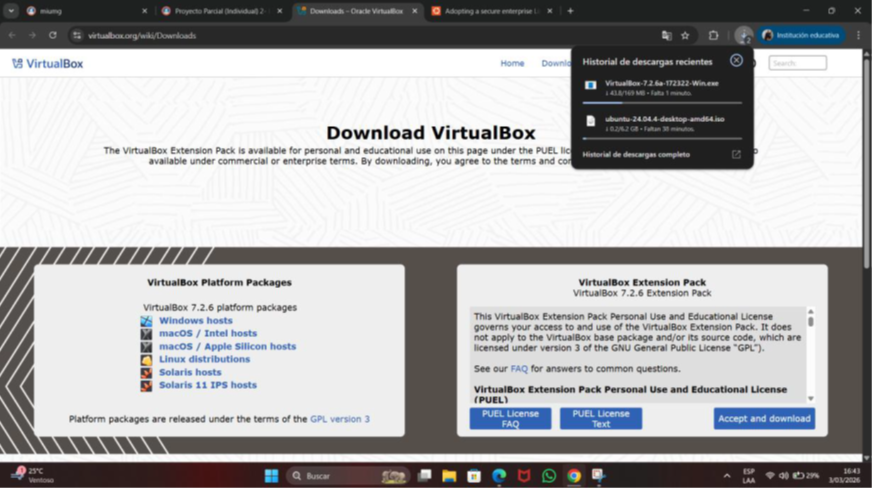
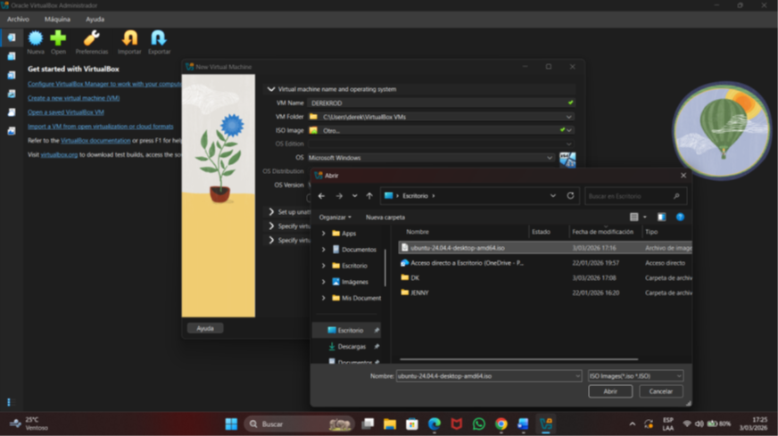
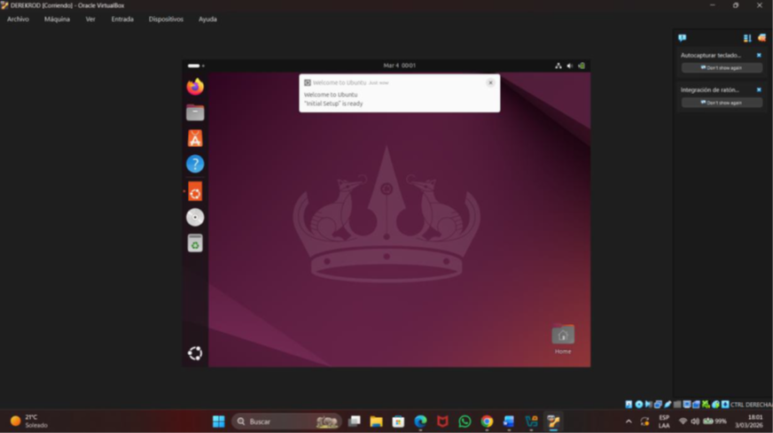
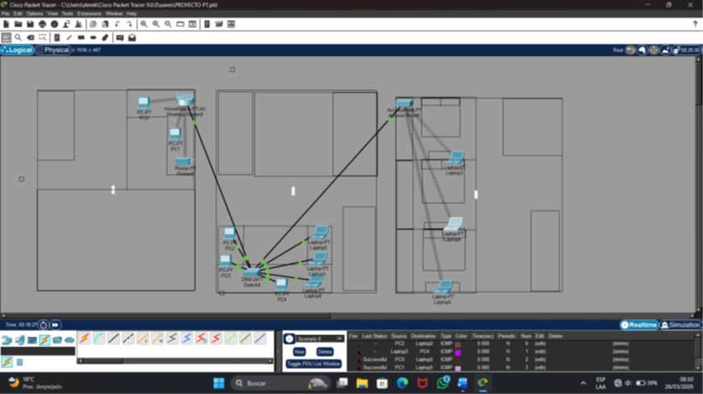
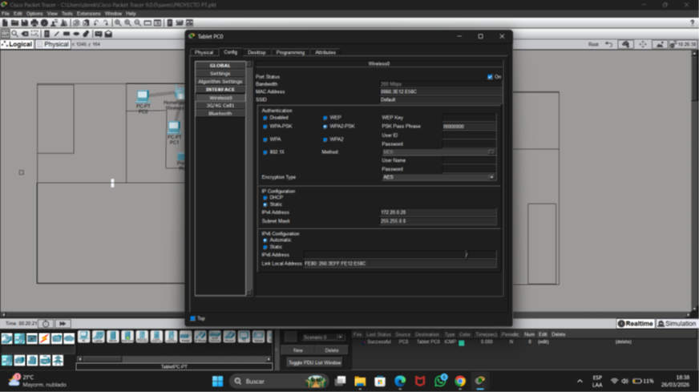
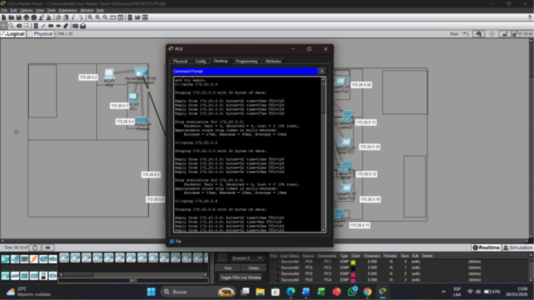
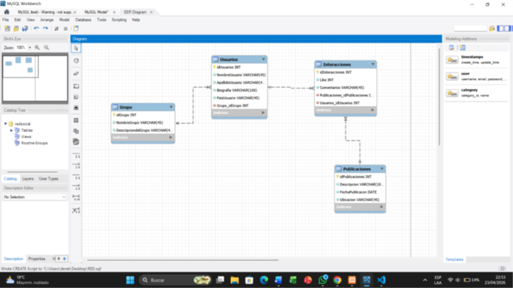
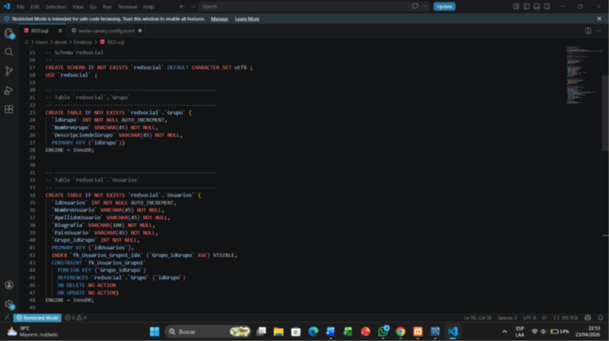
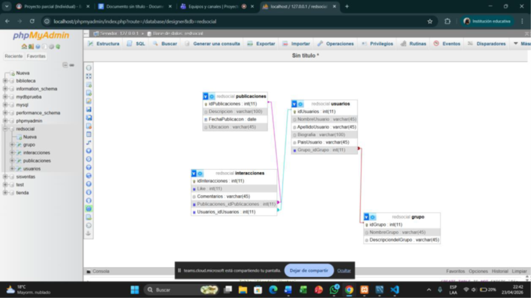

COMPETENCIAS ADQUIRIDAS ESTE SEMESTRE
Manejo de Sistemas Operativos 15%
Durante este curso aprendi sobre comandos basicos para ejecutar tareas en Linux y Windows asi mismo como crear
maquinas virtuales en entornos graficos
Manejo de HTML Y CSS 50%
Apendi sobre como crear paginas web en html y css de formas basica pero funcional tomando como referencia
los documentos que nos dio el Ing y asi mismo realizando Investigacion por otros medios para obtener o comprewnder codigos
no vistos en clase
Obtencion de Diplomado de Packet Tracer-20%
Durante este curso realice la creacion de Cables de red ademas saque un Diplomado a nivel basico de Packet tracer
PROYECTOS REALIZADOS DURANTE EL SEMESTRE
MANTENIMIENTO PREVENTIVO
Este fue el primer proyecto del curso en el cual fue en grupos de cinco en el cual realizamos un mantenimiento
preventivo el cual es de gran importancia para prevenir daños a nuestro pc como también mejorar el rendimiento. El mantenimiento
preventivo consiste en realizar limpiezas, revisiones y pequeños ajustes para evitar problemas futuros.
LINK DEL VIDEO
IMAGENES
 |
 |
 |
INSTALACION Y COMANDOS DE UBUNTU
En este trabajo aprendí sobre la instalación y uso básico de Ubuntu utilizando VirtualBox, algo que me ayudo bastante ya
que si bien antes había trabajado mucho con máquinas virtuales pero no con sistemas Linux. Durante el proyecto fui entendiendo paso a
paso como instalar y configurar Ubuntu dentro de VirtualBox sin necesidad de cambiar el sistema operativo principal de la computadora.
Al inicio del proceso aprendí a descargar e instalar VirtualBox y después a crear una máquina virtual configurando aspectos como la memoria RAM, el
almacenamiento y la imagen ISO de Ubuntu.
LINK DEL VIDEO
IMAGENES
 |
 |
 |
PACKET TRACER
En este proyecto aprendí a utilizar Packet Tracer para realizar una simulación de red y configurar diferentes
dispositivos conectados entre si. La verdad fue una de las prácticas que mas me ayudo a comprender mejor como funcionan las redes
ya que pude ver de forma visual la conexión entre computadoras, routers, switches y dispositivos inalámbricos.
Durante el desarrollo del proyecto fui configurando varios equipos dentro del programa, asignando conexiones y realizando configuraciones
básicas de red. Al inicio algunas partes me confundían bastante porque nunca había trabajado profundamente con Packet Tracer, pero poco a
poco fui entendiendo como conectar correctamente cada dispositivo y como hacer que todos pudieran comunicarse entre si.
LINK DEL VIDEO
IMAGENES
 |
 |
 |
BASE DE DATOS
Proyecto parcial sobre una base de datos realizado con xapp y sqlworbeach
LINK DEL VIDEO
IMAGENES
 |
 |
 |